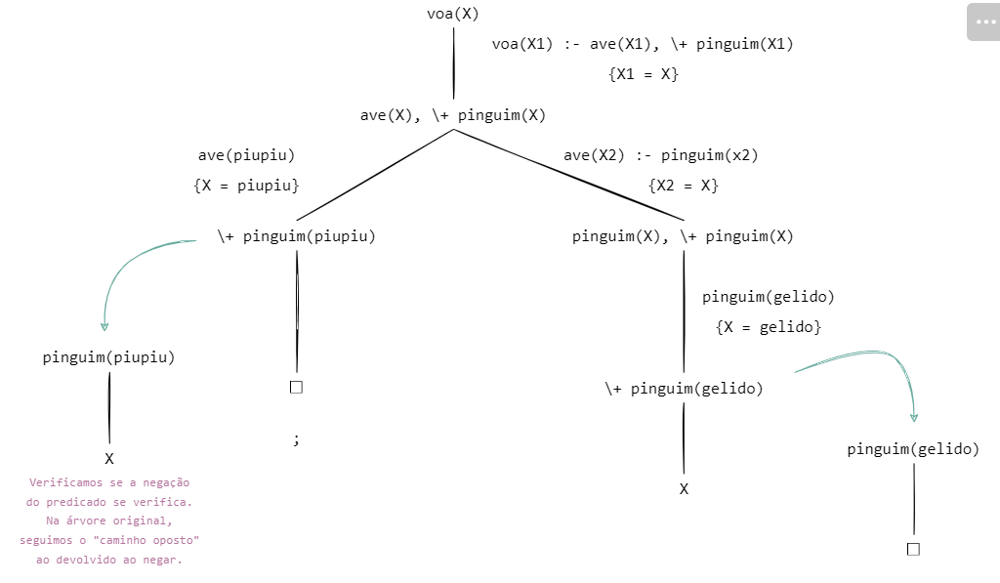

Conceito de paradigma
O conceito de paradigma se refere a um conjunto de ideias, teorias e práticas aceitas por um grupo em determinado momento. Ele serve como um "modelo" que orienta a forma como enxergamos e resolvemos problemas dentro de uma área do conhecimento. O termo foi popularizado por Thomas Kuhn no seu livro "A Estrutura das Revoluções Científicas", onde ele explica que, ao longo do tempo, paradigmas dominantes podem ser substituídos por novos à medida que surgem descobertas que o modelo antigo não consegue explicar.
No mundo da computação, paradigmas são fundamentais, principalmente no desenvolvimento de software. Existem vários paradigmas de programação, e cada um oferece uma maneira diferente de abordar e resolver problemas:
O Paradigma Imperativo , por exemplo, se baseia em sequências de instruções que dizem ao computador "o que fazer e como fazer", como em linguagens tipo C e Python.
Já o Paradigma Orientado a Objetos organiza o código em torno de "objetos", que são como pequenos blocos de dados e funcionalidades, sendo bastante usado em linguagens como Java e C++.
No Paradigma Funcional , a ideia é tratar tudo como funções matemáticas sem mexer no estado do programa, o que evita efeitos colaterais e torna o código mais previsível (Haskell e Scala são exemplos de linguagens funcionais)
Por fim, o Paradigma Lógico , presente na linguagem Prolog, se baseia em fatos e regras lógicas para resolver problemas, usando deduções automáticas
Esses paradigmas não são "concorrentes", ou seja, muitas vezes são combinados para resolver diferentes tipos de problemas da melhor forma. A escolha do paradigma depende do projeto, das necessidades e até das preferências dos desenvolvedores.
Origem do paradigma lógico
A origem do paradigma lógico remonta à lógica formal, um campo desenvolvido pelos filósofos e matemáticos do século XIX, como Gottlob Frege e George Boole. A base teórica foi posteriormente refinada por Bertrand Russell e Alfred North Whitehead. No entanto, foi apenas nas décadas de 1960 e 1970, com o surgimento da Inteligência Artificial, que o paradigma lógico encontrou aplicação prática em computação. A criação da linguagem Prolog em 1972 por Alain Colmerauer e Philippe Roussel marca um ponto crucial na história do paradigma, permitindo a implementação prática de sistemas baseados em lógica de predicados
No paradigma lógico , amplamente utilizado em linguagens como Prolog, a resolução de problemas se baseia em fatos, regras, consultas e unificação . Vamos explicar cada um desses conceitos e como eles se relacionam para formar a lógica de programação:
Sobre o Paradigma Lógico
Fatos
- Fatos representaminformações ou estados verdadeiros sobre o problema ou o mundo.
- No contexto do paradigma lógico, os fatos são declarações que afirmam que algo é verdadeiro sem a necessidade de provar ou derivar essa verdade.
- Exemplo:
pai(joao, maria).
Este fato afirma que João é o pai de Maria
Regras
- Regras são afirmações condicionais que definem relações entre fatos. Elas seguem a estrutura "Se X, então Y".
- Regras permitem derivar novos fatos a partir de fatos existentes
- Uma regra é composta de uma cabeça(o que se quer provar) e um corpo (condições que precisam ser satisfeitas para a cabeça ser verdade).
- Exemplo:
avo(X, Y) :- pai(X, Z), pai(Z, Y).
Esta regra afirma que X é avô de Y se X é pai de Z e Z é pai de Y
Consultas
- Consultas são perguntas feitas ao sistema lógico para verificar se uma determinada proposição é verdadeira com base nos fatos e regras disponíveis.
- Quando uma consulta é feita, o sistema tenta provar a consulta, usando a unificação e a resolução lógica.
- Exemplo:
?- pai(joao, maria).
Esta consulta pergunta ao sistema se João é pai de Maria. O sistema responderá "sim" ou "não", dependendo dos fatos e regras existentes.
Unificação
- A unificação é o processo de casar variáveis com valores ou outras variáveis de modo que as proposições ou termos se tornem iguais.
- No paradigma lógico, a unificação é essencial para a inferência, pois permite combinar diferentes fatos e regras para resolver uma consulta.
- Se duas expressões podem ser tornadas iguais por substituição de variáveis, elas são unificadas.
- Exemplo:
?- pai(joao, X)
O sistema tentará unificar a variável X com um valor que satisfaça a consulta (neste caso, X = maria, com base no fato definido anteriormente).
Como esses elementos funcionam juntos
- Fatos fornecem as informações básicas, como "João é pai de Maria"
- Regraspermitem derivar novos fatos. Por exemplo, se você tem a regra que "se X é pai de Y e Y é pai de Z, então X é avô de Z", você pode inferir que João é avô de algum neto.
- Consultas são como fazemos perguntas ao sistema lógico, que então tenta encontrar uma resposta com base nos fatos e regras
- Unificação é o processo pelo qual o sistema resolve essas consultas, casando variáveis com valores para verificar se as proposições podem ser satisfeitas.
Exemplo completo:
- Fatos
pai(joao, maria).
pai(maria, ana).
mae(sara, maria).
Aqui estamos dizendo que:
1.João é pai da Maria.
2.Maria é mãe da Ana.
3.Sara é mãe da Maria
Exemplo completo:
- Regras:Agora, vamos definir uma regra para descobrir quem é avô de quem:
avo(X, Y) :- pai(X, Z), pai(Z, Y).
Essa regra basicamente fala:
X é avô de Y se X for pai de Z e Z for pai de Y.
Exemplo completo:
- Consultas: Agora, podemos fazer uma pergunta ao sistema. Por exemplo, queremos
saber se o João é avô da Ana:
?- avo(joao, ana).
- O sistema vai procurar nos fatos e nas regras para ver se essa afirmação faz sentido. E a resposta seria:
true.
Ou seja, o sistema confirmou que João é realmente o avô de Ana. Nesse exemplo, o paradigma lógico funciona declarando o que é verdade (fatos e regras), e depois o sistema faz as deduções necessárias pra responder às suas perguntas.
Curiosidades
- Base na lógica matemática
- Similar a um problema em que um ser humano raciocinaria;
- Linguagem declarativa;
- Conjunto de premissas que devem ser satisfeitas para obter um retorno verdadeiro;
- Marco da Inteligência artificial;
Características do Paradigma:
- Independência da ordem das operações.
- Utilização de backtracking

Vantagens:
- Permite a concepção da aplicação em alto nível de abstração;
- Linguagem mais próxima do raciocínio humano;
Desvantagens:
- Dificuldade em lidar com problemas de algoritmos complexos;
- Complexidade exponencial;
Diferenças do Paradigma Lógico para Outros Paradigmas:
- Imperativo x lógico
- Orientado ao objeto x lógico
Linha do tempo até o desenvolvimento do Prolog
Décadas de 1940 e 1950: Primeiros Passos
19
43
Plankalkül
Desenvolvido por Konrad Zuse, considerado o primeiro design de uma linguagem de programação.
19
49
Assembly Language
O código de montagem se torna uma das primeiras linguagens de baixo nível amplamente usadas.
19
57
FORTRAN
Desenvolvido pela IBM para cálculos científicos e numéricos, é considerada a primeira linguagem de alto nível amplamente usada
19
58
Lisp
Criada por John McCarthy, baseada em cálculo lambda e focada em inteligência artificial (IA) e manipulação de listas
19
59
COBOL
Criada para aplicações empresariais e financeiras, tomou-se uma das linguagens mais usadas no setor comercial
Década de 1960: Expansão da Programação
19
60
ALGOL
Uma das primeiras linguagens a influenciar diretamente o design de várias outras (C, Pascal, etc.) com sua sintaxe estruturada.
19
62
APL
Uma linguagem de alto nível com foco em operações matemáticas complexas, influenciando linguagens funcionais.
19
64
BASIC
Criada por John G. Kemeny e Thomas E. Kurtz, visava tornar a programação mais acessível.
19
67
Simula
Desenvolvida por Ole-Johan Dahl e Kristen Nygaard, introduziu o conceito de objetos, o precursor da programação orientada a objetos.
Década de 1970: Evolução da Lógica e Paradigmas
19
70
Pascal
Criada por Niklaus Wirth, uma linguagem estruturada de fácil aprendizagem.
19
70
Smalltalk
Desenvolvido na Xerox PARC, expandiu os conceitos de orientação a objetos.
19
72
C
Criada por Dennis Ritchie, tomou-se uma das linguagens mais influentes devido à sua eficiência e versatilidade.
19
72
Surgimento do Prolog
Prolog (Programming in Logic) - Criada por Alain Colmerauer e Philippe Roussel em Marselha, França, baseada em lógica matemática e voltada para IA.
Prolog foi influenciada pelas ideias de resolução lógica de Robert Kowalski e nasceu como uma linguagem declarativa, usada principalmente em inteligência artificial e em sistemas especialistas.
Historia
O início da lógica está ligado ao pensamento científico. A lógica fornece uma linguagem precisa para a expressão explícita dos objetivos, conhecimento e suposições de alguém, além disso fornece a base para deduzir consequências de premissas, para estabelecer a consistência das alegações e verificar a validade dos argumentos de alguém.
Ao longo dos séculos, a lógica passou de domínio filosófico para uma ciência aplicada que influencia diretamente no mundo atual, desempenhando um papel crucial em áreas como programação, inteligência artificial, matemática e ética (Avaliação de argumentos éticos, Resolução de dilemas morais, Consistência e Coerência etc.)
No início da década de 1970 Robert Kowalski forneceu embasamento teórico para a programação lógica, e estabeleceu que a lógica de predicados poderia ser a base de uma linguagem de programação prática
História do Prolog:
Na França no ano de 1972 Alain Colmerauer e sua equipe na Universidade de Aix-Marseille, em colaboração com outros pesquisadores desenvolveram Prolog. O interesse inicial era o processamento da linguagem natural, ou seja, construção de um sistema capaz de compreender e gerar a linguagem humana.
Em 1972, Colmerauer e sua equipe desenvolveram o primeiro intérprete Prolog (um software capaz de executar programas escritos na linguagem). A chave para o sucesso do Prolog foi a combinação de lógica de predicados e o uso de unificação e backtracking como mecanismos de inferência. Esses mecanismos permitiram ao Prolog explorar múltiplas soluções possíveis para um problema, recuando e tentando novos caminhos quando necessário.
A contribuição de Robert Kowalski foi crucial para a estrutura teórica da linguagem; um dos marcos dessa ideia foi o artigo intitulado “Prediate Logic as a Programming Language” (Lógica de Predicados como uma Linguagem de Programação).
O trabalho de Alain Colmerauer e sua equipe na Universidade de Marselha foi o ponto de partida para o desenvolvimento de uma das linguagens de programação mais influentes no campo da IA. A França não apenas deu origem ao Prolog, mas também ajudou a promovê-lo internacionalmente, consolidando sua importância no desenvolvimento de sistemas lógicos e especialistas. O termo Prolog é derivado da expressão “Programming in Logic

Alain Colmerauer e Philippe Roussel
Desenvolvimento da primeira versão em Marselha
Universidade Edinburgo
Lança o Edinburgh Prolog que se torna a implementação mais popular
Projeto de computadores de quinta geração
Prolog é amplamente utilizada no projeto de computadores no Japão
A jornada do Prolog nas Décadas de 1990 e futuras
Prolog continua a ser usado em nichos especializados e como ferramenta educacional em cursos de IA e lógica.
Características
- Programação Declarativa: Os programas PROLOG são escritos de forma declarativa, especificando o que deve ser feito, em vez de como deve ser feito. Isso facilita a descrição de problemas complexos de forma concisa
- Baseado em Regras: Os programas PROLOG consistem em regras lógicas, representadas como cláusulas, que são usadas para inferir informações e responder a consultas.
- Unificação: O mecanismo central do PROLOG é a unificação, que permite combinar termos lógicos, tomando-o eficaz para pesquisa em bancos de dados, representação de conhecimento e resolução de problemas.
- Recursão: A recursão é uma característica fundamental do PROLOG e é usada para expressar algoritmos de maneira elegante.
Vantagens
- Expressividade: O PROLOG é altamente expressivo e eficaz para representar problemas de lógica e sistemas especialistas.
- Manipulação de Conhecimento: É bem adequado para a representação e manipulação de conhecimento e fatos.
- Resolução de Problemas : Não Determinísticos: O PROLOG pode ser usado para resolver problemas não determinísticos, como roteamento, planejamento e resolução de quebra-cabeças.
Desvantagens
- Eficiência: O PROLOG nem sempre é a escolha mais eficiente para problemas que requerem iterações intensivas, pois sua execução é baseada em inferência lógica, o que pode ser lento em comparação com linguagens de programação imperativas.
- Complexidade: Programar em PROLOG pode ser desafiador para iniciantes, especialmente ao lidar com problemas complexos e regras lógicas intricadas.
- Aplicabilidade Limitada: O PROLOG é mais apropriado para problemas específicos, como IA, sistemas especialistas e processamento de linguagem natural, e pode não ser a melhor escolha para aplicativos convencionais.
Curiosidade:
- A coruja: A coruja do SWI-Prolog foi escolhida como símbolo por representar sabedoria, combinando bem com a proposta da linguagem, que envolve lógica e resolução de problemasivas.
- O Interpretador/Compilador: Desenvolvido pela universidade de Amsterdã
- O Ambiente: Gratuito e abrangente, desde seu início em 1987, o desenvolvimento do SWI-PROLOG tem sido impulsionado pelas necessidades de aplicação no mundo real; é amplamente usado em pesquisa e educação disponibilizando livros, tutoriais comunidades, documentação entre outros.
- Vamos entender como funciona o Prolog na prática:
Prolog na Prática
- Prolog é uma linguagem de programação que utiliza o paradigma de programação em lógica - especifico quê e o que lhe deve ser feito. Concebida com o objetivo inicial de resolver problemas associados à inteligência artificial/tradução de linguagem natural, hoje em dia as suas aplicações vão desde a LN/IA à lógica e à computação numérica e simbólica.
- Conceitos Importante: todo o input escrito na prompt, tem de terminar com um ponto final.
Termos
- Um dos conceitos importantes em Prolog é otermo, que consiste numa variável, constante, ou função que as aceita como argumentos (um termo composto, portanto).
- Quanto às constantes, estas podem ser átomos ou números. Os
átomospodem ser: - como "nomes" numa LP normal (i.e postMalone, ciDADE, zero),começando sempre por minúscula;
- cadeias de carateres, utilizando plicas. Aqui, a primeira letra pode ser maiúscula (ou até_). São exemplos 'cidade','LeBron'e'_poster';
- um átomo especial (! , [ , ] , ; , { , } , + , - , * , / , **), sendo estes últimos pouco utilizados.
Variáveis
- começam sempre por maiúscula ou"_"(sendo que"_"por si só é a variável anónima , utilizada quando o valor da variável não tem interesse numa expressão).
- Várias ocorrências de variáveis anónimas numa mesma expressão correspondem a ocorrências distintas , e devem ser tratadas como tal - não é necessariamente a mesma variável em cada sítio.
- Termos Compostos:correspondem à aplicação de um functor a um dado número de argumentos. Um functor é necessariamente um átomo. Existem funções pré-embutidas em Prolog, tais como "+, *, /". São exemplos "vencedor(X), 'vencedor'(_X), +(5, X), 5 + X". De realçar que escrever "+(5, X)" e "5 + X" é exatamente a mesma coisa!
- Literais:corresponde à aplicação de um predicado ao número apropriado de termos (devolve verdadeiro ou falso). Um literal de aridade (nº de argumentos) zero é um átomo. Sintaticamente, não existe diferença entre termos compostos e literais - decidir se é uma coisa ou outra depende do contexto. São exemplos mae(Marge, Bart), filho(Bart, Marge).
Leitura/Escrita
- O Prolog, tal como as outras linguagens de programação, também apresenta instruções de leitura e escrita de dados, instruções estas que correspondem a predicados.
- Instruções de Leitura : Utilizamos, para leitura, o predicado "read/1", que unifica o termo escrito como input com o termo argumento.
Para além de na "prompt " termos de utilizar o ponto final, temos de o escrever também no input.
?- read(a).
a.
true.
Operadores de Corte, Negação, Paragem/Execução Forçada
- Operador de Corte "!" é utilizado para indicar que, num programa onde um dado ramo produz soluções, devemos seguir esse ramo (algo do género "se já sabes que o que fizeste está bem, segue em frente.").
Tal como o `break` de outras linguagens, só deve ser utilizado quando estritamente necessário (e, quando utilizado, devidamente comentado), visto que pode alterar inadvertidamente a semântica declarativa do programa.
Veja o exemplo abaixo:
% remove_repetidos(L1, L2)
remove_repetidos([], []).
remove_repetidos([P|R], L) :-
membro(P, R), !, % caso seja membro, nem precisa de ir à cláusula seguinte
remove_repetidos(R, L).
remove_repetidos([P|R], [P|L]) :- remove_repetidos(R, L).
% a interação resultante é correta:
?- remove_repetidos([a,c,c,a,b,c], L).
L = [a,b,c].
- Falhando Forçado O predicado "fail/0" tem duas utilidades principais, sendo que apenas uma delas é vulgarmente utilizada.
O seu propósito é criar um nó falhado propositadamente.
O primeiro propósito, menos usual, é para obter todas as respostas a um objetivo de uma vez, em vez de ter de utilizar o ";" para verificar todas as respostas.
Podemos observar uma interação deste género abaixo:
?- membro(X,[1,2,3]), writeln(membro(X,[1,2,3])), fail.
membro(1,[1,2,3])
membro(2,[1,2,3])
membro(3,[1,2,3])
false.
% esta interação é realizada sem a necessidade de ;
% a interação resultante é correta:
% o próprio ; também não aparece
- O segundo propósito, mais utilizado e bastante poderoso, é utilizar o "fail"em conjunto com o operador de corte.
Um exemplo bastante simples para ilustrar a sua utilidade é o de verificar se duas listas são disjuntas -
duas listas são disjuntas quando não têm nenhum membro em comum, pelo que basta haver um para o objetivo retornar "false".
Assim sendo, é interessante combinar um operador de corte com um "fail", tal que:
% disjuntas(L1, L2)
disjuntas([], _) :- !.
disjuntas(_, []) :- !.
% caso seja membro, nem precisa de verificar mais, é falso de certeza
disjuntas([P1|_], L2) :-
member(P1, L2),
!, fail.
disjuntas([_|R1], L2) :- disjuntas(R1, L2).
- Negação A combinação mencionada acima, combinar o `fail` com o corte, permite definir a negação por falhanço ,
diferente da negação lógica. Esta negação é baseada na hipótese do mundo fechado, mencionada na introdução ao Prolog.
Se o Prolog não consegue derivar algo, assume que é falso.
Em Prolog, este tipo de negação é utilizado através de um meta-predicado, `\+`, aplicado a literais.
Observemos o exemplo:
membro(1,[1,2,3])
membro(2,[1,2,3])
membro(3,[1,2,3])
false.
% esta interação é realizada sem a necessidade de ;
% a interação resultante é correta:
% o próprio ; também não aparece
-
Este programa pode ser lido tal que "para responder ao objetivo `\+(P)`, tente-se provar P. Caso não seja possível, o objetivo é satisfeito;
caso contrário, retorne-se `false`".
Em relação a um exemplo concreto:
Em relação a um exemplo concreto:
voa(P) :- ave(P), \+ pinguim(P).
% P voa caso seja uma ave que não um pinguim
ave(gelido)./p>
ave(piupiu).
pinguim(gelido).
% interações possíveis
?- voa(gelido).
false.
?- voa(piupiu).
true.
?- voa(X).
X = piupiu ;
false.
A image abaixo é uma ilustração da interação acima:
A negação por falhanço não funciona, contudo, corretamente para objetivos não chãos (ou seja, para objetivos com variáveis).
- Execução Forçada: Apesar de teoricamente uma regra ter o formato "< literal > :- < literais >", podemos supor a hipótese de " literal " ser "nada". A regra ficaria, então, com um aspeto do género :-
< literais >, algo do género "para provar "nada", prove os literais a seguir a ":-". Pode ser bastante útil em casos de tentar fazer debug (i.e :- writeln('Este é o passo < n > do programa')),
ou até mesmo para definir certos acontecimentos que acontecem sempre ao carregar um certo ficheiro no Prolog
Por exemplo, se utilizarem a GUI do SWI-Prolog, podem ir às definições e ao "user init file " e escrever alguns comandos que serão forçosamente executados, como por exemplo:
% dark mode
:- use_module(library(theme/dark)).
% mensagem ao entrar - deverão ver isto ao abrir o SWI-Prolog
:- writeln('This is a test!').
% se estiverem na vossa diretoria default e quiserem abrir x ficheiros
% pode ser útil no projeto para não andarem sempre a abrir o ficheiro
:- [
]..
Bibliografia
- CodeQueens: Página dedicada a compartilhar informações cruciais para profissionais. Destacar e celebrar o papel fundamental das mulheres no campo do desenvolvimento.
- Mascote: Curiosidade Mascote
- Interpretador/Compilador desenvolvido pela universidade de Amsterdã : Interpretador/Compilador desenvolvido pela universidade de Amsterdã
- Artigo: The Japanese national Fifth Generation project: Introduction, survey, and Evaluation
- Mais referencias: Visitar
-
Moura, Karla. "Paradigmas de Programação: Um Estudo Comparativo."
Zambon, Fabio A. "Paradigmas e sua Influência no Desenvolvimento de
Linguagens de Programação."
Carvalho, Antonio F. "Paradigmas de Desenvolvimento de Software e Seus Impactos."
Forbellone e Eberspächer “Lógica de Programação: Teoria e Prática.”
livros

Princípios de linguagens de programação - Ana Cristina Vieira de Melo -Flávio Soares Corrêa da Silva -Universidade de São Paulo.

The Art of Prolo -Advanced Programming Techniques - Leon Sterling, Ehud Shapiro

Simply Logical - Peter Flach